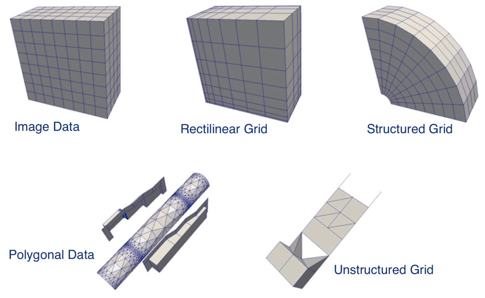

What format to choose to save your data
Friday, November 4th, 2022, 1:00pm - 2:30pm
You can find this page at https://folio.vastcloud.org/formats
Abstract: Which file format should you use when saving your research dataset? Besides the obvious question of how to encode your data structures in a file, you might also want to consider portability (the ability to write/read data across different operating systems and different programming languages and libraries), the inclusion of metadata (data description), I/O bandwidth and file sizes, compression, and the ability to read/write data in parallel for large datasets. In this introductory in-person workshop, we will cover all these aspects starting from the very basic file formats and ending with scalable scientific dataset formats. We will cover CSV, JSON, YAML, XML, BSON, VTK, NetCDF, HDF5, using both structured and unstructured datasets and demoing all examples in Python.
Links
- Fall 2022 training schedule: https://bit.ly/wg2022b
- Research computing autumn in November: https://autumnschool2022.westdri.ca (free registration)
- Training materials: https://training.westdri.ca (upcoming and archived events, ~100 recorded webinars)
- Documentation: https://docs.alliancecan.ca
- Email: training “at” westdri “dot” ca
Requirements
In the demos we will use Python and quite a few Python libraries to write into all these file formats. If you are comfortable with running Python and installing Python libraries on your computer, we will mention the libraries as we go during the workshop. For everyone else, we will provide access to a remote system with all these libraries installed – all you’ll need is a browser.
Themes
- Main theme: tabular data ⮕ Python data structures (hierarchical dictionaries) ⮕ large arrays
- Parallel theme: ASCII ⮕ binary ⮕ scientific formats with metadata, compression, parallel I/O
- Also to consider: file sizes, bandwidth (I/O speed), portability
Remote system
Log in to the remote system and copy the workshop files into your home directory:
cp /home/user19/shared/formats/{jeopardy.csv,mandelbulb300.nc,writeNodesEdges.py} .In a Python notebook in our JupyterHub, use:
!cp /home/user19/shared/formats/{jeopardy.csv,mandelbulb300.nc,writeNodesEdges.py} .Python packages
pyyaml bson dict2xml pickle netCDF4 networkx numpy pandas xarray vtk pyevtkCSV
- tabular data, such as a spreadsheet or database
- ASCII format ⇨ good for small datasets
import csv
filename = "jeopardy.csv" # from https://domohelp.domo.com/hc/en-us/articles/360043931814-Fun-Sample-DataSets
rows = []
with open(filename, 'r') as csvfile: # open the CSV file in READ mode
csvreader = csv.reader(csvfile) # create a CSV reader iterator
fields = next(csvreader) # extract first row; advance the iterator to the next row
for row in csvreader: # extract each row one by one
rows.append(row)
print("total number of rows:", len(rows))
print("field names are:", fields)
for row in rows[:5]: # print first 5 rows
print(row)
for col in rows[0]: # cycle through the first-row columns
print(col)
with open("short.csv", 'w') as csvfile:
csvwriter = csv.writer(csvfile) # create a CSV writer object
csvwriter.writerow(fields) # write the fields
csvwriter.writerows(rows[:10]) # write the data rowsThere is alternative syntax:
csvfile = open("short.csv", 'w')
csvwriter = csv.writer(csvfile)
csvwriter.writerow(fields)
csvwriter.writerows(rows[:10])
csvfile.close()Let’s now use pandas dataframes for processing our rows and columns:
import pandas as pd
data = pd.read_csv("jeopardy.csv")
data.shape # 216930 rows, 7 columns
data.head(10) # first 10 rows
data.columns # names of the columns
data.loc[data['Category']=='HISTORY'].shape # 349 matches
data.loc[data['Category']=='HISTORY'].to_csv("history.csv") # write to a fileSimple Python dictionaries can be stored as 2-column tables. Here is an example of writing a Python dictionary to CSV:
centres = {'Vancouver': 2463, 'Calgary': 1393, 'Toronto': 5928, 'Montreal': 4099, 'Halifax': 413} # Python dictionary
with open('cities.csv', 'w') as f: # open a stream for writing
for key in centres.keys():
f.write("%s, %s\n" % (key, centres[key]))Modify the last Python script to add a header “city, population” to this CSV file.
How about a more complex Python dictionary, with some hierarchical structure? For that a CSV file won’t work, but you can use JSON files.
JSON
- JavaScript Object Notation, inspired by JavaScript object literal syntax, although not part of JavaScript
- human-readable text, although can contain non-ASCII characters
- very popular for encoding all sorts of data among web developers
- internal mapping is similar to that of a Python dictionary, with key-value pairs
Let’s start again with a simple dictionary:
import json
centres = {'Vancouver': 2463, 'Calgary': 1393, 'Toronto': 5928, 'Montreal': 4099, 'Halifax': 413} # Python dictionary
y = json.dumps(centres) # convert it to a JSON string
type(y) # it is string, as far as Python is concerned
json.loads(y)["Vancouver"] # back to a Python dictionary that we can subset
type(json.loads(y)) # it is really a dictionary
# convert more complex Python object to a JSON string
a = ['something', {'more': ('complex', None, 1.0, 2)}]
json.dumps(a)
# can use custom separators
json.dumps(a, separators=("; ", " > "), sort_keys=True)You can convert into JSON strings the following Python objects: int, float, string, logical, tuple, list, dict, None.
import json
x = {
"name": "John",
"age": 30,
"married": True,
"divorced": False,
"children": ("Ann","Billy"),
"pets": None,
"cars": [
{"model": "BMW 230", "mpg": 27.5},
{"model": "Ford Edge", "mpg": 24.1}
]
}
jstring = json.dumps(x)
print(jstring)
# write the string to a file
with open('personal.json', 'w') as f:
f.write(jstring)
# read the file
with open('personal.json', 'r') as f:
data = f.read()
type(data) # it is a (JSON) string
g = json.loads(data) # convert to a dictionary
g["name"]Convert the last write operation from a stream to an “open-close” block.
You can also write the dictionary directly to a file, without creating a JSON string:
with open('personal.json', 'w') as outfile:
json.dump(x, outfile)
with open('personal.json') as file: # read from a file into a dictionary
data = json.load(file)
print(data)To summarize:
json.dumps()converts a Python object to a JSON stringjson.loads()converts a JSON string to a Python objectjson.dump()writes a Python object to a stream as a JSON stringjson.load()loads a Python object from a JSON string stream
Finally, let’s write a large multidimensional numpy array into JSON. The converter json.dumps() is not aware of the numpy data format. If you try to run f.write(json.dumps(x)), you will receive “TypeError: Object of type ndarray is not JSON serializable”. However, you can convert this array to a list:
import numpy as np
x = np.zeros((100,100,100), dtype=np.float32) # allocate single-precision 100^3 array
x[:] = np.random.random(size=x.shape) # fill it with random numbers drawn from a uniform [0,1) distribution
x.dtype # single precision
x.shape # (100, 100, 100)
import json
f = open("array.json", 'w')
f.write(json.dumps(x.tolist()))
f.close() # the new file is 20,289,659 bytes - remember this numberTo read it:
import json
f = open("array.json", 'r')
data = f.read()
f.close()
b = json.loads(data) # convert to a nested list
type(b) # it is a list
len(b) # it has 100 elements (2D slices)
len(b[0]) # of which the first element also has 100 elements (1D columns)
len(b[0][0]) # of which the first element also has 100 elements (individual numbers)YAML
- stands for YAML Ain’t Markup Language
- uses indentation to define structured data
- often used as a format for configuration files
- simpler replacement for the JSON format
- https://www.cloudbees.com/blog/yaml-tutorial-everything-you-need-get-started
pip install pyyamlimport yaml
x = {
"name": "John",
"age": 30,
"married": True,
"divorced": False,
"children": ("Ann","Billy"),
"pets": None,
"cars": [
{"model": "BMW 230", "mpg": 27.5},
{"model": "Ford Edge", "mpg": 24.1}
]
}
yaml.dump(x) # dump to the terminal
with open('personal.yaml', 'w') as f: # write to a file
yaml.dump(x, f, sort_keys=False, default_flow_style=False)Setting default_flow_style=True would give you a more compact notation with separators, but it’ll be more difficult to read with a naked eye.
Let’s now read it. There are different readers (“loaders”) ordered by their security level:
BaseLoaderloads all the basic YAML scalars as stringsSafeLoaderloads subset of the YAML safely, mainly used if the input is from an untrusted source; cannot deal with Python tuplesFullLoaderloads the full YAML but avoids arbitrary code execution; still poses a potential risk when used for the untrusted inputUnsafeLoaderis the original loader, generally used for backward compatibility
import yaml
from yaml.loader import FullLoader
with open('personal.yaml') as f:
data = yaml.load(f, Loader=FullLoader)
print(data)Let’s try writing 2 documents into a YAML file:
x2 = {'this': 77, 'there': 45, 'hi': 10, 'at': 23, 'Hello': 7}
with open('personal.yaml', 'w') as f: # write to a file
data = yaml.dump_all([x,x2], f, sort_keys=False, default_flow_style=False)You can read them with:
import yaml
from yaml.loader import FullLoader
with open('personal.yaml', 'r') as f:
data = list(yaml.load_all(f, Loader=FullLoader))
print(len(data))
print(data)XML
- eXtensible Markup Language
- uses a tag to define the structure, just like HTML
- 3rd popular serialization format https://www.csestack.org/yaml-vs-json-vs-xml-difference
- write/read XML from Python
- https://stackabuse.com/reading-and-writing-xml-files-in-python
- https://www.geeksforgeeks.org/serialize-python-dictionary-to-xml
Here let’s consider only a quick write example:
pip install xml-pythonimport xml.etree.ElementTree as ET
data = ET.Element('data')
items = ET.SubElement(data, 'items')
item1 = ET.SubElement(items, 'item')
item2 = ET.SubElement(items, 'item')
item1.set('name','item1')
item2.set('name','item2')
item1.text = 'item1-some-text'
item2.text = 'item2-some-text'
mydata = ET.tostring(data)
type(mydata) # it is a `bytes` object
myfile = open("items.xml", "wb") # write it into a string
myfile.write(mydata)
myfile.close()pip install dict2xmlfrom dict2xml import dict2xml
x = {
"name": "John",
"age": 30,
"married": True,
"divorced": False,
"children": ("Ann","Billy"),
"pets": None,
"cars": [
{"model": "BMW 230", "mpg": 27.5},
{"model": "Ford Edge", "mpg": 24.1}
]
}
xml = dict2xml(x)
print(xml)
myfile = open("personal.xml", "w")
myfile.write(xml)
myfile.close()BSON
- binary Javascript Object Notation, i.e. binary-encoded serialization of JSON documents
- data storage, main format for MongoDB
- can even send/receive BSON objects over network sockets from Python
- used heavily for sending/receiving data in web development
- a list of ordered elements containing a field name, type, and value
- maximum structure size is 2GB (not very good …)
pip install bsonIt is very easy to write into BSON files:
import bson
x = {"a": [1, 2, 3, 4, 5, "6", {"some": "text"}]}
a = bson.dumps(x) # convert dictionary -> BSON object (string of binary codes)
f = open("test.bson", 'wb')
f.write(a)
f.close()Reading is a reverse process:
import bson
f = open("test.bson", 'rb')
data = f.read() # read a BSON string
f.close()
bson.loads(data) # extract our dictionaryLet’s consider a larger numpy array. If you try to pass it via a dictionary value to BSON, it’ll crash with an error, as BSON library is not smart enough to understand a numpy array wrapped into a dictionary. However, you can encode this numpy array into a byte stream with a numpy-aware pickle library (https://docs.python.org/3/library/pickle.html):
import numpy as np
x = np.zeros((100,100,100), dtype=np.float32) # allocate single-precision 100^3 array
x[:] = np.random.random(size=x.shape) # fill it with random numbers drawn from a uniform [0,1) distribution
x.dtype # single precision
import pickle # binary protocols for serializing (converting into a byte stream) and de-serializing Python object structures
import bson
table = {"random": pickle.dumps(x)}
f = open("array.bson", 'wb')
f.write(bson.dumps(table))
f.close() # the new file is 4,000,181 bytes - compare this to an earlier JSON example (20 MB)Note: For those wondering if we could convert a “pickled” numpy array to BSON, without using a dictionary, e.g.
xstream = pickle.dumps(x)
bson.dumps(xstream)the answer is “no”, as the second command would produce “AttributeError: ‘bytes’ object has no attribute ‘keys’”, i.e. bson.dumps() expects a dictionary.
Now, let’s read from BSON:
import pickle, bson
f = open("array.bson", 'rb')
data = f.read()
f.close()
newTable = bson.loads(data) # convert BSON -> dictionary
b = pickle.loads(newTable["random"]) # de-serialize the value back into a numpy array
type(b) # numpy array
b.dtype # single precisionHow would you store a network as a Python data structure?
1. list of node coordinates
2. list of connections, each with two node IDs
3. optionally can wrap the previous two into a dictionary
4. try to write it into a BSON file
NetCDF (and HDF5)
Previously, we saw that storing a large data array was very efficient with BSON (as far as file sizes are concerned), but we had to jump through a number of hoops:
- put our array into a byte stream
- use this byte stream as a value in a dictionary
- convert this dictionary to BSON
- write this BSON to disk
There is a much better approach for large arrays: use a dedicated scientific array format library such as NetCDF or HDF5. These are available from (virtually) all programming languages. What they provide:
- data description
- data portability
- data compression
- multiple variables in a single file
- multiple timesteps in a single file (if desired)
- optionally, parallel I/O
NetCDF and HDF5 are related to each other and heavily borrow from each other’s source code. There are some differences too, e.g.
- NetCDF has an ecosystem of conventions, e.g. a CF (climate-forecast) convention
- NetCDF is understood natively by ParaView, HDF5 not so easily
- HDF5 was developed specifically for storing hierarchical/nested data
Here we only show NetCDF.
pip install netCDF4import numpy as np
import netCDF4 as nc
f = nc.Dataset("array.nc", 'w', format='NETCDF4')
f.createDimension('x', 100)
f.createDimension('y', 100)
f.createDimension('z', 100)
rho = f.createVariable('density', 'f4', ('x', 'y', 'z')) # f4 stands for 4-byte float
rho[:,:,:] = np.random.random(size=(100,100,100))
f.close() # 4,008,192 bytesNow let’s read it:
import netCDF4 as nc
ds = nc.Dataset("array.nc")
print(ds) # can see the dimensions, variables, precision
print(ds["density"].shape)
print(ds["density"][:]) # it is a numpy arrayTurn on compression when saving the variable. Did it change the file size?
Read a highly compressed dataset from file mandelbulb300.nc. Compare the file size to the size of embedded data – do they agree? Give a reason behind that.
If you want the functionality of pandas (easy 2D table manipulation) in a multidimensional array, then you can use xarray Python library. Xarray library is built on top of numpy and pandas. There are two main data structures in xarray:
- xarray.DataArray is a fancy, labelled version of numpy.ndarray
- xarray.Dataset is a collection of multiple xarray.DataArray’s that share dimensions
pip install xarrayimport xarray as xa
import numpy as np
data = xa.DataArray(
np.random.random(size=(8,6)),
dims=("y","x"), # dimension names (row,col); we want `y` to represent rows and `x` columns
coords={"x": [10,11,12,13,14,15], "y": [10,20,30,40,50,60,70,80]} # coordinate labels/values
)
dataWe can access various attributes of this array:
data.values # the 2D numpy array
data.values[0,0] = 0.53 # can modify in-place
data.dims # ('y', 'x')
data.coords # all coordinates, cannot modify!
data.coords['x'][1] # a number
data.x[1] # the sameArray subsetting:
- isel() selects by index, could be replaced by [index1] or [index1,…]
- sel() selects by value
- interp() interpolates by value
data.isel() # same as `data`
data.isel(y=1) # second row
data.isel(y=0, x=[-2,-1]) # first row, last two columnsVectorized operations:
data + 100 # element-wise like numpy arrays
(data - data.mean()) / data.std() # normalize the data
data - data[0,:] # use numpy broadcasting => subtract first row from all rowsLet’s initialize two 2D arrays with the identical dimensions:
coords = {"x": np.linspace(0,1,5), "y": np.linspace(0,1,5)}
temp = xa.DataArray( # first 2D array
20 + np.random.randn(5,5),
dims=("y","x"),
coords=coords
)
pres = xa.DataArray( # second 2D array
100 + 10*np.random.randn(5,5),
dims=("y","x"),
coords=coords
)From these we can form a dataset:
ds = xa.Dataset({"temperature": temp, "pressure": pres,
"bar": ("x", 200+np.arange(5)), "pi": np.pi})
dsSubsetting works the usual way:
ds.sel(x=0) # each 2D array becomes 1D array, the 1D array becomes a number, plus a number
ds.temperature.sel(x=0) # 'temperature' is now a 1D array
ds.temperature.sel(x=0.25, y=0.5) # one element of `temperature`We can save this dataset to a file:
ds.to_netcdf("double.nc")Reading it is very easy:
new = xa.open_dataset("double.nc")We can even try opening this 2D dataset in ParaView - select (x,y) and deselect Spherical.
So far we’ve been working with datasets in Cartesian coordinates. How about spherical geometry – how do we initialize and store a dataset in spherical coordinates (longitude - latitude - elevation)? Very easy: define these coordinates and your data arrays on top, put everything into an xarray dataset, and then specify the following units:
ds.lat.attrs["units"] = "degrees_north" # this line is important to adhere to CF convention
ds.lon.attrs["units"] = "degrees_east" # this line is important to adhere to CF conventionCreate a \(100\times 300\) (nlat\(\times\)nlon) spherical dataset with two variables adhering to the NetCDF CF convention.
VTK = versatile format for spatially defined data
VTK is a computer graphics and visualization library that’s been around since early 1990s. Originally it was C++ only, but now there are interfaces from other languages as well, including Python.

- legacy VTK: ASCII or binary data, ASCII metadata, could write manually or through APIs
- XML VTK: usually binary data, compression, parallel I/O, write via API
In simple cases using the original VTK library is probably an overkill, as doing even simple things could involve quite a few function calls. VTK is a very powerful library, but there is also a very steep learning curve. Consider the number of functions inside VTK’s Python interface:
pip install vtk pyevtkimport vtk
[i for i in dir(vtk)] # returns 3593 functions
[i for i in dir(vtk) if "Writer" in i] # returns 104 functionsWe will see an example of using the original VTK library below. But first let us consider a simple example of writing data on a Cartesian mesh (ImageData in VTK speak). For this we can use a more lightweight library called PyEVTK which is dedicated library for exporting data stored in numpy arrays to VTK files.
import numpy as np
from pyevtk.hl import imageToVTK
nx, ny, nz = 30, 30, 30
ncells = nx * ny * nz
npoints = (nx+1) * (ny+1) * (nz+1)
pressure = np.random.rand(ncells).reshape((nx, ny, nz)) # double precision
temp = np.random.rand(npoints).reshape((nx+1, ny+1, nz+1)) # double precision
imageToVTK("image", cellData = {"pressure": pressure}, pointData = {"temp": temp})Try loading this file into ParaView.
Now let’s try writing a StructuredGrid dataset to a file:
from pyevtk.hl import gridToVTK
import numpy as np
nx, ny, nz = 30, 30, 30
xside, yside, zside = 1.0, 1.0, 1.0
ncells = nx * ny * nz
npoints = (nx+1) * (ny+1) * (nz+1)
X = np.linspace(0, xside, nx+1, dtype='float64') # three coordinate axes
Y = np.linspace(0, yside, ny+1, dtype='float64')
Z = np.linspace(0, zside, nz+1, dtype='float64')
x, y, z = np.meshgrid(X,Y,Z) # 3D coordinate arrays
# perturb the grid to make it more interesting
x += (0.5 - np.random.random(npoints).reshape(nx+1,ny+1,nz+1)) * 0.5 * xside/nx
y += (0.5 - np.random.random(npoints).reshape(nx+1,ny+1,nz+1)) * 0.5 * yside/ny
z += (0.5 - np.random.random(npoints).reshape(nx+1,ny+1,nz+1)) * 0.5 * zside/nz
pressure = np.random.rand(ncells).reshape((nx, ny, nz))
temp = np.random.rand(npoints).reshape((nx+1, ny+1, nz+1))
gridToVTK("structured", x, y, z, cellData = {"pressure" : pressure}, pointData = {"temp" : temp})Finally, here is the promised example with the original VTK library:
import networkx as nx
from writeNodesEdges import writeObjects
H = nx.complete_bipartite_graph(15,5) # two sets of nodes
print(nx.number_of_nodes(H), 'nodes and', nx.number_of_edges(H), 'edges')
pos = nx.spring_layout(H,dim=3,k=1) # dictionary of positions keyed by node
xyz = [list(pos[i]) for i in pos] # convert to a nested list of positions
degree = [d for i,d in H.degree()]
print('degree =', degree)
writeObjects(xyz, edges=H.edges(), scalar=degree, name='degree', fileout='network')This wrote to a PolygonalData file. Try loading this file into ParaView and displaying the network with nodes and edges.
If you want to write to an UnstructuredGrid file, replace the last line with:
writeObjects(xyz, edges=H.edges(), scalar=degree, name='degree', fileout='network', method = 'vtkUnstructuredGrid')